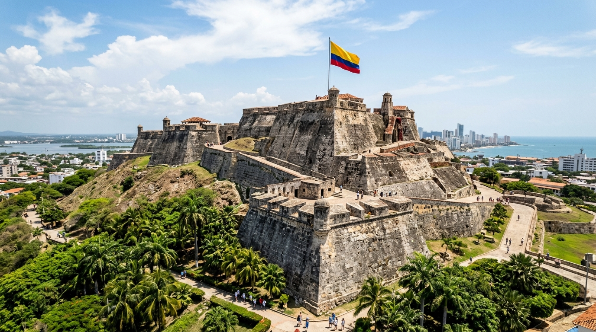
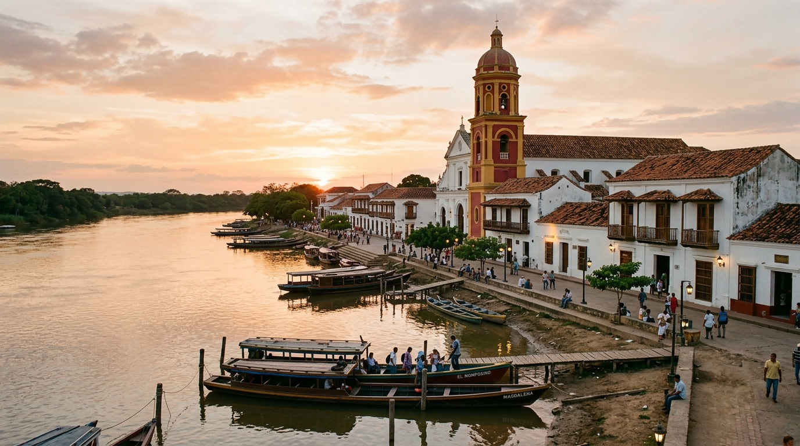
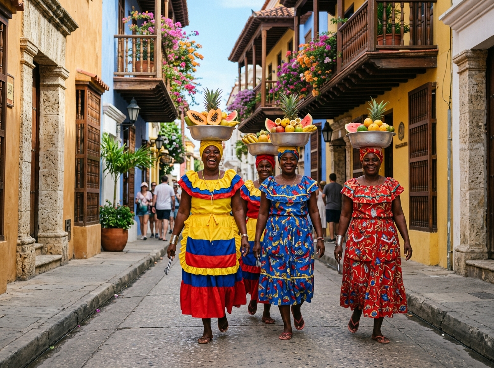
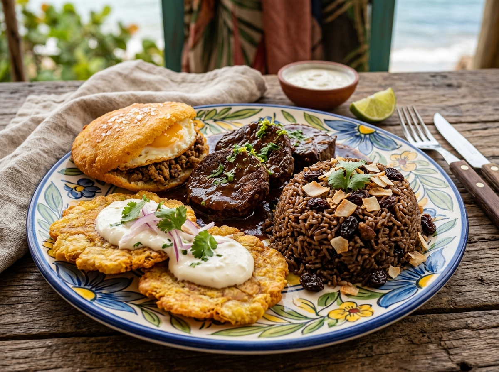
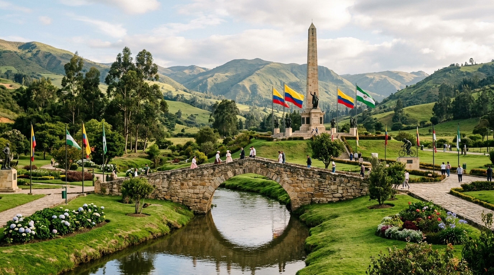
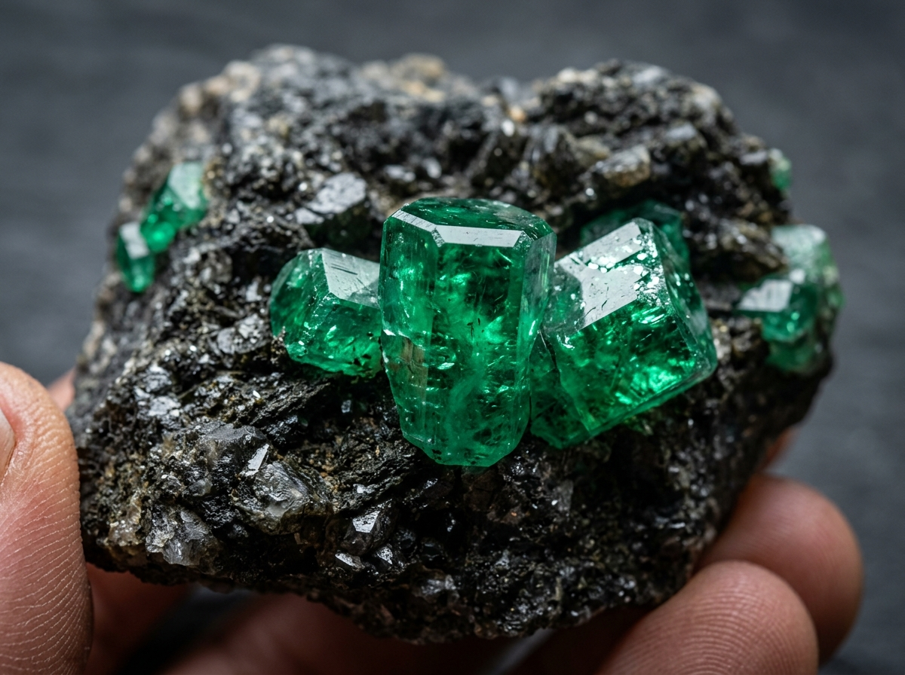
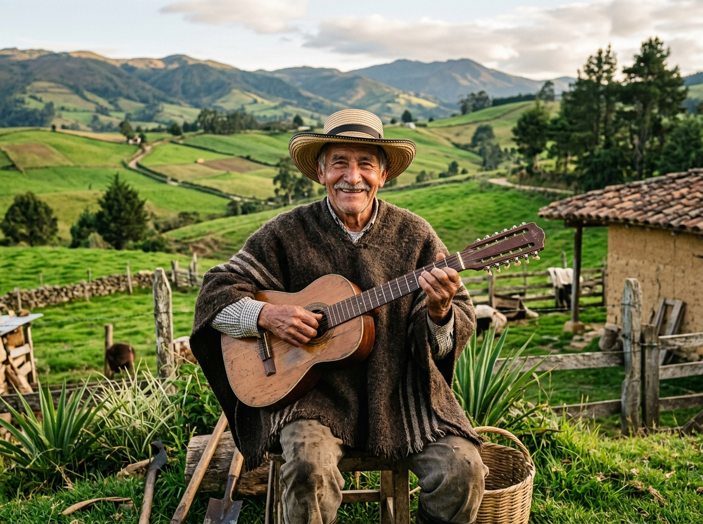
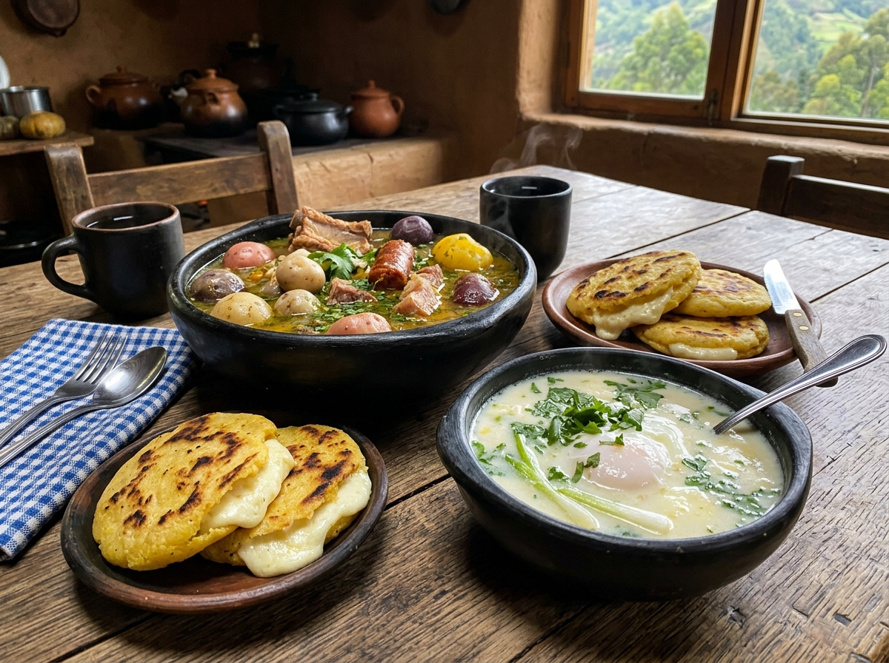

Departamento de Bolívar
"Puerta naval histórica de Colombia, eje del Río Magdalena y baluarte de la libertad"
Origen del Nombre & Fundación
- Significado del Nombre: Bautizado en memoria de Simón Bolívar (El Libertador), en gratitud por su gesta heroica independentista.
- Marco Legal: Nació como Estado Soberano de Bolívar (1857) y fue ratificado formalmente como Departamento el 5 de agosto de 1886.
Ubicación, Límites & Principales Ríos
- Ubicación: Al norte del país en la costa Caribe, extendiéndose al sur hasta la Serranía de San Lucas.
- Límites: Mar Caribe al norte; Magdalena, Cesar y Santander al este; Antioquia al sur; Sucre y Córdoba al oeste.
- Ríos y Cuerpos de Agua Clave:
Hitos Históricos Clave de Bolívar
Hogar de los pueblos Zenúes y Calamares, maestros en orfebrería e ingeniería de canales hidráulicos fluviales.
Santa Cruz de Mompox floreció sobre el río Magdalena. Fue la primera población en declarar independencia absoluta en 1810.
Crecimiento como el mayor nodo de comercio marítimo e industrialización química de Colombia en la era contemporánea.

Río MagdalenaMompox & Red Fluvial
Santa Cruz de Mompox: Patrimonio de la Humanidad sobre el río Magdalena. Puerto fluvial histórico y cuna de la orfebrería en filigrana de oro y plata.

TradiciónPalenque & Cumbia
Cuna de la cumbia y el bullerengue. Hogar de San Basilio de Palenque (primer pueblo libre de América, patrimonio inmaterial UNESCO) y las icónicas palenqueras.

SaboresGastronomía Típica
Posta negra cartagenera: Carne caramelizada en panela, arroz con coco y pasas, patacones con suero costeño y la clásica arepa de huevo frita.

Departamento de Boyacá
"Cuna y Taller de la Libertad de América, tierra del sol muisca y despensa agrícola"
Origen del Nombre & Fundación
- Significado del Nombre (Muisca): De Boi (manta) y Ca (cercado o región): significa "Cercado de la manta" o "Región del manto real".
- Marco Legal: Creado como Estado Soberano de Boyacá (1857) y consolidado departamento con la Constitución del 5 de agosto de 1886.
Ubicación, Límites & Principales Ríos
- Ubicación: Centro-oriente de Colombia, sobre la Cordillera Oriental de los Andes (valles, páramos y nevados).
- Límites: Santander y Norte de Santander al norte; Casanare y Arauca al este; Cundinamarca al sur; Antioquia y Caldas al oeste.
- Ríos y Cuerpos de Agua Clave:
Hitos Históricos Clave de Boyacá
Corazón de la confederación muisca. Dominio del Zaque de Hunza y centro de adoración al Sol en Sogamoso.
Heroica carga de los 14 lanceros de Juan José Rondón en Paipa ("¡Coronel Rondón, salve usted la patria!").
Victoria definitiva de Bolívar y Santander sobre las tropas de Barreiro, sellando la independencia patria.

MineríaEsmeraldas de Muzo
Riqueza Mundial: Las minas de Muzo y Chivor extraen las esmeraldas de mayor pureza del planeta. Boyacá es además líder en siderurgia (Paz del Río) y carbón.

FolcloreCarranga, Ruana & Tiple
Música carranguera campesina de Jorge Velosa. Símbolos de identidad: la ruana de pura lana virgen de Nobsa, cerámicas de Ráquira y el tradicional tiple.

SaboresCocido & Arepa Boyacense
Cocido boyacense: Tubérculos andinos (cubios, chuguas, ibias), arepas dulces rellenas de cuajada campesina y la tradicional changua caliente.